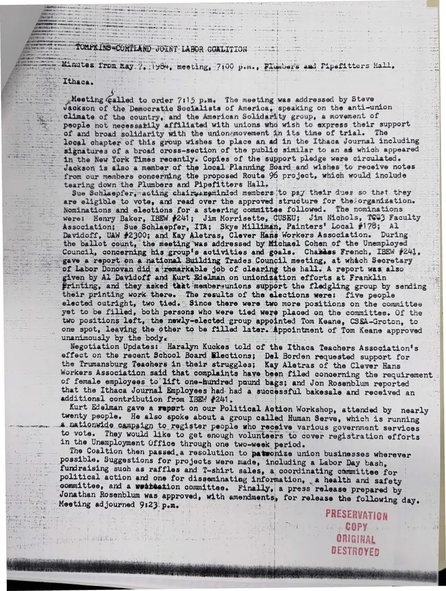

Minutes, 1 page
Minutes of the May 7, 1984 meeting
May 7, 1984
Steve Jackson of the Democratic Socialists of America speaks on the anti-union climate. Members elect the first steering committee, hear negotiation updates from several locals, pass a resolution to patronize union businesses, and approve a press release.
A second copy of these minutes (page 52 of the scan) is not shown.
Download or cite this itemPages


(open zoom view)Read the page text (machine-read, mostly readable)
This text was generated automatically from the photograph and has not been corrected. The image is the authoritative record.
ome - --Minutes) from may); \iy64, meeting, 7100 p.m., Pluubers awd Pipsfitters Hall, = TOMPKINS SCONTLAND- JOINT: LABOR COALITION © °-7! PR ny ‘Ithaca. -Mesting Galled to order 7315 pemsy The meeting was addressed by Steve ackson of the Democratic Socialists of America, speaking on the anti-union > -elimate of the country, and the American Solidarity group, a movement of ~~” people not necessabily affiliated with unions wha wish to express their support “=... of and broad solidarity with the unionzmovement in its time of trial. The leeal chapter of this group wishes to place an ad in the Ithaca Journal including ‘signatures of a broad cross-section of the publig similar to an ad which appeared : in the New York Times recently. Copies of the support pledge were circulated. “Jackson is also a member: of the local Planning Board. and wishes to receive notes from our members concerning the proposed Route 96 project, which would include tearing down the Plumbers and Pipefitters Hall, Sue Schlaepfer,-acting: chairyangtinied members to pay their dues so that they are eligible to vote, and read over the approved structure for the!organization. Nominations and elections for a steering committee followed. The nominations “were: Henry Baker, IBEW #241; Jim Morrisette, GUSBU; Jim Nichols, 1633 Faculty oo Reker esd sa tem “gave a report on a national Building Tra UnGsd “of Labor Donovan did a‘remarkable job of clearing the hall. A report was also _ unanimously by. the bodye . ..- “Meeting adjourned 93:23. pom. Association; Sue Schlaepfer, ITA; Skye Milliman, Painters’ Local #178; Al- Davidoff, UAW #2300; and Kay Aletras, Clever Hans Workers Association. During. the ballot count, the meeting was addressed by Michael Cohen of the Unemployed Council, concerning his group's activities and goals. Chades French, IBEW #24], nal. Building Trades Council meeting, at which Secretary given by Al Davidoff and Kurt Edelman on unionization efforts at Franklin ~~ ‘Printing, and they asked that ‘member+unions support the fledgling group by sending their printing work there. The results of the elections were: five people elected outright, two tied... Since there were two more positions on the committee yet to be filled, both persons who were tied were placed on the committee. Of the two positions left, the newly-elected group appointed Tom Keane, CS8A-Groton, to one spot, leaving the other to be filled later. Appointment of Tom Keane approved as he Negotiation Updates: Haralyn Kuckes told of the Ithaca Teachers Association's 4 effect on the recent School Board Blections; Del Borden requested support for a the Trumansburg Teachers in-their struggles; Kay Aletras of the Clever Hans Workers Association said that complaints have been filed concerning the requirement . of female employees to lift one-hundred paund bags; and Jon Rosenblum reported “it that the Ithaca Journal Employees had: had a successful bakesale and received an additional contribution from IBEW #241. ae Kurt Edelman gave a report on our Political Action Workshop, attended by nearly twenty people. He also spoke about a group called Human Serve, which is running -& natlonwide campaign to register people who receive various government services to vote. They would like to get enough volunteers to cover registration efforts in the Unemployment Office through one two-week period. The Coaltion then passed.a resolution to patwonize union businesses wherever possible. Suggestions for projects were made, including a Labor Day bash, fundraising such as raffles and T-shirt sales, a coordinating cammittee for political action and one for disseminating information, , a health and safety committee, and a wekbtetion committee. Finally,! a press release prepared by Jonathan Rosenblum was. approved, with amendments, for release the following day, PRESERVATION a COPY ORIGINAL “| DESTROYED isa
See something wrong, or recognize a person or event? Send a correction. If you hold rights in this item or think it should not be public, write to the same address.